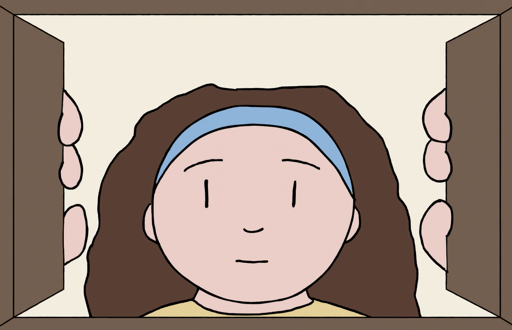
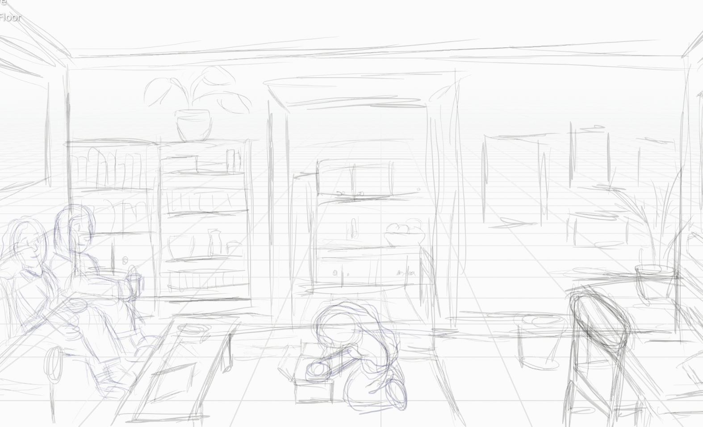

As a lifelong lover of animation, I had to give it a try myself. This section contains my experiments and projects in animation.
-
Animation
TI and I Proof of Concept (Winter 2021)
-
A bouncing ball
Bouncing Ball (Winter 2021)
The bouncing ball is a classic introduction to animation. The ball rises and falls parabolically with respect to time in the air and deforms (losing very little volume) as it strikes the ground. For the sake of artistic portrayal, these physics can be exaggerated.
-
Running Test (Winter 2021)
I wanted to see how few frames (only 7!) I could convey a running motion in. I made a 3D reference video in advance to make drawing the low angle easier.
-
Lip Sync Test (Winter 2021)
I made this animation to test syncing existing dialogue with animation. The audio clip is from the film “The Incredible Sock Man,” which my friends and I filmed between High School and College.
-
Water Sausage (Winter 2021)
An inventor contemplates his imminent demise at the hands of his own creation, the water sausage.
The audio is from a video I made at summer camp in 2013 in which other campers ganged up on me with water baloons made of the tubular plastic bags our new cots came in, an idea I had originally come up with.
-

A storyboard sketch for a scene in the film
TI & I Proof of Concept
My end goal in learning animation is to create my own short films. This film would be a slice-of-life story about a girl growing up to become a scientist, framed through the lens of her graphing calculator.
The story is inspired by my own TI-84 Silver Edition calculator I've had since 5th grade and still use today!
Test clip
I started working on a test scene, sketching, animating, and compositing in Blender.
Test clip
While the characters and select objects were drawn in 2D, most of the background, including decorative objects, are cel-shaded 3D models.
Though more time-consuming initially, this technique allows me to rearrange/reuse objects, shoot backgrounds from any angle, and even move the camera without having to manually animate the background.